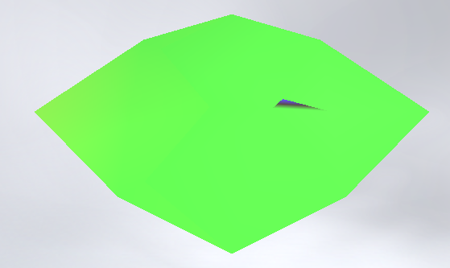
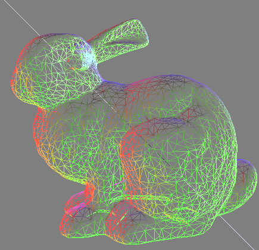
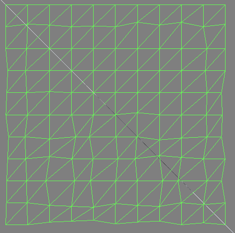

PA2: Geometric Modeling and Mesh Simplification
Downloads
Linux Binary - Compiled with GCC 5.4.0 on the current Ubuntu LTS (16.04). Tested with an NVidia Geforce GTX 750 TI
Prerequisites
This program has some library prerequisites. Please ensure you have GLFW 3, Assimp and GLEW installed. This program uses OpenGL for display purposes, and requires at least OpenGL 4.1. Assimp is used for model file import only, and the only preprocessing option I used was aiProcess_JoinIdenticalVertices which deduplicates vertices. It was put out that it is acceptable to use Assimp so long as no preprocessing was used. Unfortunately, it turns out that Assimp actually creates duplicate vertices so that every face has 3 "unique" verices if you do not pass in this option. Given that the .off files provided specify indexed face sets, I assume that aiProcess_JoinIdenticalVertices should do nothing, and is fine.
Usage
To run the program, download the binary and unzip it. From the command line, change to the directory you unzipped the binary into and execute ./model and you should see a cube suspended in a skybox. This cube is just a placeholder, and cannot be decimated. At this point, you should load any model that is in the subdirectory ./res/models/ by pressing enter, typing the filename and pressing enter again. For example:
[enter]
bunny.off
[enter]
After a bit of loading, you should see the bunny model with some fancy disco lighting. I've provided with this distribution the model files that were provided for testing. Since I'm using Assimp for model load, my program should support most standard model formats. Memory usage is a bit tight, so I reccommend against loading huge model files. For instance, the "Stanford Thai Statue" model loads successfully in my program, however causes swapping on my machine, rendering the system largely unusable. However, the largest model provided by course staff, armadillo.off, loads and simplifies with no issues.
Control Modes
There are three control modes for the model viewer. Camera, Rotation, and Translation. By default, the control mode is in Camera. The camera rotates about <0, 0, 0>, and the left and right arrow keys control horizontal movement. The up and down arrow keys control vertical movement. Finally, Page Up translates the camera towards the origin, and Page Up translates the camera away.
If you press t, you'll enter translation mode. Here, Up and Down translate the model in the y axis, Left and Right translate the model in the x axis, and Page Up and Page Down translate in the z axis. The Object is translated in camera space, so the object will always move up/down, left/right, and towards/away from the camera, and not relative to world space. You can press t to toggle translate mode off and reenter camera mode
If you press r, you'll enter rotation mode. Left/Right rotates about the y axis. Up/Down rotates about the x axis. Page Up/Page Down rotates about the x axis. Press r again to reenter camera mode.
All together, these three control modes should allow the user to position the object and camera to view any angle needed.
Display Modes
The model by default is shown with phong shading and filled triangles. There are three direction lights positioned at the three points of a triangle pointed at the origin: one red, one gree, and one blue. These lights are initially static. If the user presses l, the lights will begin to rotate counterclockwise. If the user presses l again, they will change to rotating clockwise. If the user presses l again, they will stop in their current position. This cycle can be repeated.
It can be helpful to view collapses using the model wireframe. This can be accomplished by pressing w. Pressing w will show the wireframe with the current coloring configuration. Pressing w again will transition back to filled triangles.
Finally, one aspect of mesh decimation is ensuring that all the data remains consistent in the reduced model. One major part of this are the normal vectors of each vertex. If the user presses n, the model will be colored using its normals. If all is well, the right side of the model should be red, the top should be green, and the front should be blue. This coloring should remain correct if the model is rotated or translated. Press n again to return to phong shaded coloring.
Decimation Controls
To remove edges from the mesh, press - and to add edges press = (conceptually - and +). By default 1 edge will be added or removed, and they will not be smoothly transitioned.
Obviously, removing 1 edge at a time would be incredibly tedious. The {0, 1, ..., 9} keys can be used to control how many edges are added or removed per operation. For a key n, (n+1)^n edges will be added or removed when the user presses - or =. So {0, 1, 3, 4, 5, ..., 8, 9} → {1, 2, 9, 625, 7776, ..., 43046721, 1000000000}. For most models, 9 ends up being "add all the edges" or "remove all the edges". Regardless, this scheme gives a pretty broad level of control, One can remove most of the edges, then step one at a time to observe the behavior at various detail levels.
By default, when edges are added and removed, they will just pop in or out. To support the Geomorph behavior, the user can press g to enter smooth transition mode. When g is pressed, edges will smoothly collapse and then be removed, enabling the geomorph. To swap back to instantaneous mode, press g again.
Finally, it would be nice if you can see what edge will collapse next. To see the next collapse, press tab. For plane.off with nothing collapsed, you should see something similar to this:
If normal coloring is being drawn, phong shading will be enabled. Most vertices will maintain their current coloring, but vertices that will be affected by the next collapse will change. The two vertices that will be collapsed will both be colored white. Every vertex adjacent to the first vertex of the collapse will be colored red. Every vertex adjacent to the second vertex of the collapse will be colored blue. Any vertex that is adjacent to both will get both colors, and will end up being colored magenta. In this way, you can preview a collapse prior to executing and convince yourself that it is or isn't correct.
Other Keybinds
To exit the program, the user can press esc. Of course, using the window manager provided close button works also.
If the user presses v, they will enter Verbose Mode. In verbose mode, each collapse or expansion will perform extensive validation. At the very least, at the beginning and end of the collapse or expansion, every vertex, face, and collapse will be validated. Some intermediate validation happens as well. All of this will be printed to stderr, and this is very slow. I strongly reccommend that you do not use this option in conjunction with any number key higher than 1, you will be sitting there for a long time.
In the pre/post validation passes each vertex, face, and collapse are asserted to be correct, based on various metrics. So if you enable verbose mode, and collapse or expand an edge, and the program doesn't crash, then everything was fine.
Like most interactive 3D applications, my program has a running timer. A deltaT derived from this timer is used throughout the frame-by-frame update logic, and the user can control a multiplier of this deltaT. You can press , to increas or . to decrease (< and > conceptually) the multiplier. This tends to speed up and slow down "things that are smooth". Some useful side effects of this are: the lights will rotate faster, rotations and translations of the model/camera will be faster, and most importantly the geomorph will proceed faster or slower. By default the timescale multiplier is 1. If decreased below 1, it decreases in increments of 0.1. If increased above 1 it increases in increments of 1. It is bounded to the range [0.1, 11.0].
Finally, if the user presses c, they will ready the fin test demo required by section 3.3 of the assignment writeup. More on this later.
Mesh Connectivity Datastructure
Initially, I began implementing a winged edge datastructure, as my research determined that this representation is ideal for mesh decimation. Unfortunately, it soon occurred to me that OpenGL requires an indexed face set due to how it represents mesh data internally. At the very least, I need an indexed face set in order to synchronize with OpenGL, so the least-overhead option would be to use this internally as well. Therefore, for my mesh connectivity datastructure, I decided to go with an indexed face set, and vertex set with face adjacency.
In my Mesh class, I maintain two arrays: an array of Face and an array of Vertex. All links between vertices or faces are in terms of indices into these arrays; there are no pointers stored in any datastructure. I also have a "nil index" that serves the same purpose as NULL, defined as INT_MAX.
The Vertex structure contains a position, a Quadric, and a linked list of indices to adjacent faces. The Face structure contains 3 indices that represent its constituent vertices, as well as an area and a normal vector. To update the datastructure for an edge collapse:
collapse vertices v0 and v1 into v
Merge adjacency lists of v0 and v1
For all adjacent faces of v:
If a constituent vertex is v1, change it to v0
store v in place of v0
copy vertex vEnd into the place of v1
for all adjacent faces of vEnd:
if a constituent vertex is vEnd, change it to v1
For all degenerate faces adjacent to v:
Delete the degenerate face
Copy face fEnd into the place of the degenerate face
For all constituent vertices of fEnd:
Find fEnd in the adjacency list, change it to the index of the degenerate face
The time complexity of this operation depends only on the adjacent edges and faces, and at no time walks a whole array. To build the datastructure from the data in the .off file:
read in file, create list of vertices and list of indicies
Find the highest and lowest (x, y, z) values of the vertices.
Find the length of max(x, y, z) - min(x, y, z)
Find the center of mass of the model
For each vertex of the .off file:
translate the vertex by the center of mass
scale the vertex by the lenght of the min and max vectors
add it to the vertices array
For each 3 indices of the .off file
Calculate the normal vector
Calculate the area
add these 3 indices as a face in the face array
add this new face to the adjacency list of its constituent vertices
For each vertex of the mesh:
Sort the adjacency list
Find any degenerate faces in the face array
Find any vertices that are not part of a face
Remove any degenerate faces and disconnected vertices from the mesh
Compute the quadric for each vertex
For each vertex:
insert the collapse between this vertex and the endpoint for each edge it participates in.
Mesh Decimation
Each collapse is inserted into a binary tree. To get the next collapse, one needs to find the smallest element in the tree. In C++, std::set is guaranteed to have O(log n) insert, removal, and find (std::set is typically implemented as a red-black tree, but it is not required to be) std::set::begin() returns an iterator the smallest element, and this is used to get the next element.
Problem: The set order is maintained based primarily on cost. The cost of a collapse is a floating point number, and it is very hard to compare floating point numbers due to floating point roundoff. This makes is so that you can insert a collapse, but never be able to find it again. The collapse is in the set in the correct place, and you can walk the entire collection to the location, but set::find() and set::erase() will never be able to get at it.
In order to overcome this issue, I store a separate map from (index0, index1) → iterator. set::insert returns an iterator to the thing it just inserted. If I save this iterator, I can use it in future calls to erase so that I don't end up with stale collapses in the set.
With this problem solved, it's a simple matter of finding the next collapse, which has the smallest cost, and collapsing that edge based on the procedure above.
Fins
Another problem with mesh decimation is the possibility that fins are created. Fins are pairs of mirror-image faces that randomly jut out from the model like shark fins. These are generally undesirable, and I've implemented a method to eliminate them. In order to find a fin:
let tris be a set of sets of indices
let fins be a set of indices
for each adjacent face of a newly collapsed vertex:
let tri be a set that contains the face's 3 constituent vertices
try to find tri in tris:
if tris contains tri, then the current face is part of a fin. Insert the current face into fins
otherwise the current face is not nessesarily a fin
insert tri into tris
The idea here is that if the newly collapsed vertex is adjacent to two faces that share the same vertices, just in a different order, that these two faces make up a fin. We save the vertices of each face into a set. If we come upon the same combination of vertices more than one, then this second identical face is the second half of a fin. After we've identified all the fins:
let fins be the set of indices defined above
for each face in fins:
let c be a collapse of one of the edges of the current face
collapse the edge c
We pick any edge of the fin face, and collapse it. This will cause the two faces of the fin to become degenerate, and they will be removed by the collapse edge routine, thus eliminating the fin.
Above, we disucssed the c keybind that primes the fin test demo required by section 3.3 of the assignment writeup. If we press that, testpatch.off will be loaded, and the edge, that if removed will create a fin is artificially inserted into the collapses set with a negative weight. This collapse will be chosen next to collapse. If we push c then push tab:
We see that the next edge we remove will create a fin. If we did not handle the fin case, this would be the result of the collapse:

That fin might be desirable if we were designing a surfboard, but not in our decimation program. So instead we handle the fin and this is the result we get:
... and the fin is gone!
Quadric Simplification
For quadric simplification, I implemented the formulas from the slides. For error evaluation, I multiply the symmetric 4x4 matrix by the vertex in homogeneous coordinates. I then take the dot product of that with the vertex in homogeneous coordinates. To get the optimal position, I take the transpose of the inverse of the matrix, then multiply that by (0, 0, 0, 1) to get the optimal position. If the determinant is not zero, then I fall back to using edge length as the cost and the midpoint as the new position.
Bunny-holefilled.off

rocker-arm.off
mountains.off (with normal coloring)
Progressive Meshes
For mesh expansion, I maintain a stack of expansions. Every time a collapse is committed, the information that was lost is pushed onto the stack. To expand an edge, I pop the top expansion, and perform the operations of a collapse in reverse order. Given that it makes no sense to pop and expand and be left with a fin, we pop and expand edges until we expand an edge that is not a fin. When a fin is collapsed and the expansion is written, it is tagged with if it is a fin or not. When I expand, it's a simple matter of checking the flag.
Geomorph
To perform a geomorph from high to low detail:
let prev = floor(totalCurrentLerpDistance)
let curr = floor(totalCurrentLerpDistance + deltaT)
let uncommitted = curr - prev
do uncommitted times:
collapse a pair
if not at target vertex count:
totalCurrentLerpDistance += deltaT
v0 = lerp(v0, posToCollapseTo, mod(totalCurrentLerpDistance, 1))
v1 = lerp(v1, posToCollapseTo, mod(totalCurrentLerpDistance, 1))
else:
done
We take the previous distance as an integer, and we take prev + deltaT as an integer. Depending on how large deltaT is, the difference between these numbers may be non-zero. If it's non-zero, that means that the between this frame and the last frame, that many collapses happened. Commit these collapses. After that is done, we're on a partial collapse. For this part, we lerp both vertices with the collapsed vertex. To perform a geomorph from low to high detail is a similar procedure:
let prev = floor(totalCurrentLerpDistance)
let curr = floor(totalCurrentLerpDistance + deltaT)
let uncommitted = curr - prev
do uncommitted times:
v0 = lerp(posToExpandFrom, v0, 1))
v1 = lerp(posToExpandFrom, v1, 1))
expand a vertex
if not at target vertex count:
totalCurrentLerpDistance += deltaT
v0 = lerp(posToExpandFrom, v0, mod(totalCurrentLerpDistance, 1)))
v1 = lerp(posToExpandFrom, v1, mod(totalCurrentLerpDistance, 1)))
else:
while mod(totalCurrentLerpDistance, 1) != 1
v0 = lerp(posToExpandFrom, v0, mod(totalCurrentLerpDistance, 1)))
v1 = lerp(posToExpandFrom, v1, mod(totalCurrentLerpDistance, 1)))
done
Here we perform largely the same procedure. The important difference is before we expand a vertex, we must ensure that both current lerps reach 1. Otherwise this happens:
→ 
While obviously wrong, the internal datastructure is consistent. The issue is that the vertices in OpenGL's buffers don't match what's in the Mesh's datastructure. This would happen with geomorph down, but there the order is lerp -> collapse, where in expand it's expand -> lerp.
One notworthy thing about the Geomorph, unlike the standard collapse is that it's implemented in such a way that the UI remains responsive. With the standard collapse, you ask it to collapse N edges, and a big loop happens and calls collapse N times. While the collapse has low time complexity, it's still a heavyweight operation, and collapsing 10000 edges will cause a few second delay. By contrast, the geomorph advances by deltaT each frame, possibly doing a few collapses. This completes very fast each frame update, and as such 60 frames per second are maintained.
Here are a few videos of some geomorphs happening. Click on the image to see the video. However, you don't need a video; you can see any geomorph just by loading a model up in the program, selecting an edge count, pressing g, and then pressing - or =. You can rotate the camera, mess coloring and shading, and even speed up or slow down the timestep during the geomorph!
Winged Edge
As mentioned above, I began implementing a winged edge datastructure. The partial implementation can be found in the source distribution under WEMesh.[hpp/cpp]. I'd like to talk about it a bit as I spent a good few days working on it.
There are three types at the heart of this: Face, Vertex, and Edge. And 2 supplemental types: EdgeKey and FaceKey. EdgeKey is basically a pair of vertex indices, and FaceKey is a triple of vertex indices.
A Vertex contains a position, and an EdgeKey to the Edge that it participates in. A Face contains a normal vector, an area, and an EdgeKey to an edge that it participates in.
An Edge, on the other hand, is a much more complicated structure:
v2
vBackLeft / \ vFrontLeft
/ \
/ f0 \
v0----v1
\ f1 /
\ /
vBackRight \ / vFrontRight
v3
Here we have a basic diagram of the Edge structure. As this is a triangle mesh, an edge is adjacent to exactly 0, 1, or 2 edges. It keeps a FaceKey to the two possible adjacent faces. An edge has two constituent vertices, to which it holds indices to. It also has a frontLeft, backLeft, frontRight, and backRight vertex, to which it also holds indices to. As this is a triangle mesh, fontleft = backleft and frontright = backright. However, this has not yet been encoded in the type itself, as I had abandoned WingedEdge shortly after making this realization.
Supporting all of this are three hash maps: one each for edges, faces, and vertices.
One nice thing about my setup is traversal is easy. To get from some edge e, to the frontLeft edge attached to it, one just has to look up {e.v1, e.vFontLeft} in the edges map. Edges are specified by their two constituent vertices, so there is no need for an edge to store information about other edges. I used this property to define a suite of methods to traverse across edges.
I had written methods to load a mesh from file, and also to transform a WEMesh into an indexed face set suitable for consumption by OpenGL. To laod a WEMesh from file:
read in vertices and indices from file via Assimp
for each 3 indices:
insert the 3 corresponding vertices to the vertices map
try to find {v0, v1} and {v1, v0}
If neither found: insert edge {v0, v1}
Else if one or the other found: continue
try to find {v1, v2} and {v2, v1}
If neither found: insert edge {v1, v2}
Else if one or the other found: continue
try to find {v2, v0} and {v0, v2}
If neither found: insert edge {v2, v0}
Else if one or the other found: continue
for each 3 indices:
populate position data for v0, v1, and v2
set edgeKey of v0 to {v0, v1}
set edgeKey of v1 to {v1, v2}
set edgeKey of v2 t0 {v2, v0}
populate face data for {v0, v1, v2}
set edgeKey of {v0, v1, v2} to {v0, v1}
try to find {v0, v1} and {v1, v0}
if {v0, v1} found: set {v0, v1, v2} as f1
if {v1, v0} found: set {v0, v1, v2} as f0
In the first pass over the indices, we ensure entries are created for every nessesary edge. In the second pass, we create all vertices and faces, and we assign faces to edges. At this point, the connectivity should be established. To create an indexed face set from this for consumption by OpenGL:
let pos be an array of vertex positions
let normal be an array of vertex normal vectors
let idxs be an array of vertex indices
for each face:
find the edge adjacent to the face
if this face is f0 of the edge:
add indices {edge.v0, edge.v1, edge.vFrontLeft} to idxs
if this face is f1 of the edge:
add indices {edge.v1, edge.v0, edge.vBackRight} to idxs}
add position and normal of v0 to pos and idxs
add position and normal of v1 to pos and idxs
add position and normal of v2 to pos and idxs
For every face, we get its adjacent edge. Then we determine clockwise or counterclockwise winding order, and add the vertex indices in the correct order to ensure OpenGL gets a clockwise winding order. Finally, we add vertex data.
Looking back on all of this now, I like how this was shaping up much better than the indexed face set implementation I ended up with. I wonder if I could have found a way to make this work?
What didn't work out
Unfortunately, not everything worked out in the end. My edge collapses produce reasonable results for most models, but a few (fandisk and cone that I know of, possibly others) go horribly wrong.
→
I spent some time troubleshooting this, and it seems that my Quadrics are returning negative values. I can clamp them to zero and get much more reasonable results for these models, but this seems to break the other models...
Unfortunately, time has ran out, and this is a mystery that will have to remain unsolved.
This site best viewed with Netscape Navigator
Download Netscape Now